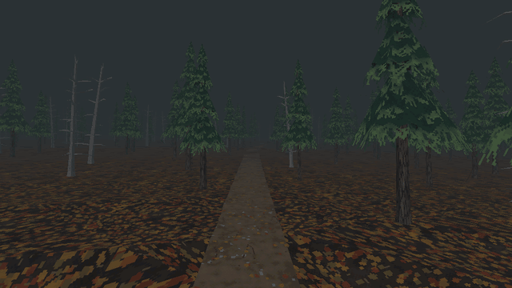

Tutorials › Grow a PS1-Style Forest
How to Grow a PS1-Style Forest in Godot 4
Trees scattered over an area by a seed, kept off the trails you draw and set on the ground, drawn as MultiMeshes in chunks: models near, flat cards far.

A forest in a PS1-style game is a trick: a few kinds of tree, scattered by a seed, the near ones as models, the far ones as flat cards, and the fog's end as the edge of the world. This script, on a Node3D, is that trick: trees scattered over an area by a seed (one seed, one forest), kept off the trails you draw as Path3D curves, set on the ground below them, and drawn as MultiMeshes in chunks, each tree as its model near and as its flat card far, nothing past the fog's end. Each trunk gets a cylinder, so the player walks round the trees.
Script: forest_grower.gd (MIT) · Godot 4.3 or newer · its folder on GitHub
How to use it
- Add a
Node3Dand attachforest_grower.gd. Its area,size, is centred on the node. - Give it one entry per kind of tree in
meshes,cardsandweights: its model, its far card and how common it is. A kind without a card draws its model up tofade_end. - Draw your trails as
Path3Dcurves and list them intrails: no trunk stands withintrail_marginmetres of a trail's middle. - Set
seed,trees_per_100m2andspacing(no two trunks closer than that). The trees are models up tofar_distanceand cards from there tofade_end: put your fog's end atfade_end. - At runtime it grows by itself on its first physics frame (its rays down to the ground need the physics world); in the editor, tick
grow_now. Withfollow_groundon, each tree stands on the collider below it, and where there is none there is no tree; off, the trees stand on the node's plane.
What it needs
- Godot 4.3 or newer.
- Ground with collision under the area (any physics body), or
follow_groundoff; a model for each kind of tree, and a flat card for the far ones.
Try it free
The Cordatix PSX Horror Free Sampler has two trees of Cordatix PSX Horror Forest with their far cards, the medium pine and the dead pine (cordatix/psx_horror_forest/meshes/pine_medium.tres and dead_pine.tres, their cards in cordatix/psx_horror_forest/cards/), in the forest's looks, and this script as cordatix/psx_horror_forest/sampler/forest_grower.gd. N in the sampler's demo room opens its forest taste: a night trail looping through a forest grown round it. The pack's own forest builder adds what a whole forest needs: undergrowth and rocks, slopes, clearings that level the ground, the rolling ground that carves the trails, the four looks at runtime, trail marks and the trail that loops when the player is lost.
How it was tested
In Godot 4.3 and 4.7.2, on a slope with a trail across it, with the free sampler's pine and dead pine and their cards: it grows by itself on the first physics frame; one seed gives one forest and another seed another; no trunk stands within 2 m of the trail; every tree stands on the slope; each chunk draws its models to 45 m and its cards from 45 to 100 m; every trunk has its cylinder; where there is no ground there is no tree.
The code
@tool
extends Node3D
## How to Grow a PS1-Style Forest in Godot 4
## Cordatix Godot 4 PSX tutorials, MIT licensed: https://github.com/GoldenSparrow-Dev/cordatix-godot-psx-tutorials
## The devlog: https://cordatix.itch.io/cordatix-psx-horror-forest/devlog/1743440/how-to-grow-a-ps1-style-forest-in-godot-4-cordatix-psx-horror-forest
## Grow a PS1-style forest (Godot 4.3+). Trees are scattered over an area by a seed (the same seed, the same forest),
## kept off the trails you draw as Path3D curves, set on the ground below them, and drawn as MultiMeshes in chunks:
## each tree as its model near, as its flat card far, nothing past the fog's end. Each trunk gets a cylinder, so the
## player walks round the trees. In the editor, tick `grow_now`; at runtime it grows by itself.
@export var size := Vector2(60.0, 60.0)
@export var seed := 1
@export var trees_per_100m2 := 2.5
## No two trunks closer than this.
@export var spacing := 2.4
## One entry per kind of tree: its model, its far card and how common it is.
@export var meshes: Array[Mesh] = []
@export var cards: Array[Mesh] = []
@export var weights: Array[float] = []
@export var trails: Array[NodePath] = []
## A trunk keeps this far from a trail's middle.
@export var trail_margin := 2.0
## Rays down find the ground (the physics bodies under the area); off, the trees stand on this node's plane.
@export var follow_ground := true
@export var chunk_size := 24.0
@export var far_distance := 45.0
@export var fade_end := 100.0
@export var trunk_radius := 0.25
@export var grow_now := false:
set(v):
grow_now = false
if v and is_inside_tree():
grow()
var _waiting := false
func _ready() -> void:
if not Engine.is_editor_hint() and get_node_or_null("Chunks") == null:
_waiting = true # rays need the physics world: grow on the first physics frame
func _physics_process(_delta: float) -> void:
if _waiting:
_waiting = false
grow()
func grow() -> void:
var old := get_node_or_null("Chunks")
if old != null:
remove_child(old)
old.free()
var chunks := Node3D.new()
chunks.name = "Chunks"
add_child(chunks)
var rng := RandomNumberGenerator.new()
rng.seed = seed
var total := 0.0
for w in weights:
total += w
var cell := maxf(spacing, sqrt(100.0 / trees_per_100m2))
var groups := {} # Vector3i(chunk x, chunk z, kind): [Transform3D]
for i in int(size.x / cell):
for j in int(size.y / cell):
var x := -size.x / 2.0 + (i + rng.randf()) * cell
var z := -size.y / 2.0 + (j + rng.randf()) * cell
var pick := rng.randf() * total
var kind := 0
while kind < weights.size() - 1 and pick > weights[kind]:
pick -= weights[kind]
kind += 1
var yaw := rng.randf() * TAU
var s := rng.randf_range(0.85, 1.15)
var y := _ground_y(Vector3(x, 0.0, z))
if is_nan(y) or _near_trail(to_global(Vector3(x, y, z))):
continue
var key := Vector3i(floori(x / chunk_size), floori(z / chunk_size), kind)
var list: Array = groups.get(key, [])
list.append(Transform3D(Basis(Vector3.UP, yaw).scaled(Vector3(s, s, s)), Vector3(x, y, z)))
groups[key] = list
for key in groups:
var middle := Vector3((key.x + 0.5) * chunk_size, 0.0, (key.y + 0.5) * chunk_size)
var near := _multimesh(chunks, meshes[key.z], groups[key], middle)
near.visibility_range_end = far_distance
if key.z < cards.size() and cards[key.z] != null:
var far := _multimesh(chunks, cards[key.z], groups[key], middle)
far.visibility_range_begin = far_distance
far.visibility_range_end = fade_end
else:
near.visibility_range_end = fade_end
_trunks(chunks, groups[key])
## The ground's height under a local point: a ray down through the physics world (NAN where there is none).
func _ground_y(local: Vector3) -> float:
if not follow_ground:
return 0.0
var top := to_global(local + Vector3(0.0, 50.0, 0.0))
var q := PhysicsRayQueryParameters3D.create(top, top - Vector3(0.0, 100.0, 0.0))
var hit := get_world_3d().direct_space_state.intersect_ray(q)
return to_local(hit["position"]).y if not hit.is_empty() else NAN
func _near_trail(world: Vector3) -> bool:
for p in trails:
var path := get_node_or_null(p) as Path3D
if path == null:
continue
var c := path.to_global(path.curve.get_closest_point(path.to_local(world)))
if Vector2(c.x - world.x, c.z - world.z).length() < trail_margin:
return true
return false
func _multimesh(parent: Node, mesh: Mesh, xforms: Array, middle: Vector3) -> MultiMeshInstance3D:
var mm := MultiMesh.new()
mm.transform_format = MultiMesh.TRANSFORM_3D
mm.mesh = mesh
mm.instance_count = xforms.size()
for i in xforms.size():
mm.set_instance_transform(i, xforms[i].translated(-middle))
var mmi := MultiMeshInstance3D.new()
mmi.multimesh = mm
mmi.position = middle # the camera's distance is measured to the chunk's middle
parent.add_child(mmi)
return mmi
func _trunks(parent: Node, xforms: Array) -> void:
var body := StaticBody3D.new()
parent.add_child(body)
for t in xforms:
var shape := CylinderShape3D.new()
shape.radius = trunk_radius
shape.height = 3.0
var cs := CollisionShape3D.new()
cs.shape = shape
cs.position = t.origin + Vector3(0.0, 1.5, 0.0)
body.add_child(cs)
The devlog and the pack
The step-by-step walkthrough is the devlog How to Grow a PS1-Style Forest in Godot 4 (Cordatix PSX Horror Forest) on itch.io, written for Cordatix PSX Horror Forest, a PS1-style asset pack by Cordatix for Godot 4, Unity, Unreal and Blender.